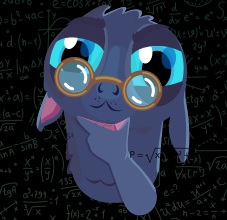

Переписка с умным читателем (и писателем). ~01.09.2025
«89) „Но место проживания моего отца было в великом море, и он был одной-единственной рыбой, пересекавшей это море во всех направлениях, от края до края. Он был большим и величественным, „и состарился и насытился днями (Атик Йомин)“, пока не проглотил всех остальных рыб моря. А затем выпустил их из себя живых и невредимых, наполненных всеми благами мира. Благодаря своей силе он проплывал всё море в одно мгновение. И произвел он меня, выпустив словно стрелу, направленную рукой воина. И доставил он меня в то место, о котором я рассказал вам, – в башню, парящую в воздухе. И вернувшись на место свое, он скрылся в этом море“».
Книга Зоар, РАШБИ, том 1, Предисловия Бааля Сулама. Погонщик ослов, п. 89
https://w.wiki/_sMLr
«А вот как создать общество, мнение которого догматично и направлено на сохранение Гармонии Мироздания и отдачу плодов добрых для нужд ближнего?
Это задачка для потрясающего аналитика при переходе от анализа к синтезу. Потрясающему синтезу. :)»
«Догматические формы — они были, есть и будут. Но все они не существуют сами по себе, и являются методом управления одних групп людей, другими группами, которые гораздо более общирны по численности, и называются „массами“, а те, которые управляют, ну, например, у Бааля Сулама они называются „мудрецами“. Не важно, как что называть, но суть в том, что человечество всегда подразделено, было, есть и будет, на данные группы, которые мы, то есть, я, называю „уровнями авиюта“ — как каббалист, последователь истинного течения РАШБИ-АРИ-Бааль Сулам, а не различных псевдо-эзотерических и „оккультных“ деятелей и литераторов, которые в социуме принято называть „каббалой“, хотя они ими не являются ни разу. И низшая (по хронологическому расположению и по численности, а не по значимости, не дай Бог), которая называется „массами“, всегда будет требовать наличия догм над собой, причем эти догмы обязаны будут придумывать не они сами, „массы“, поскольку они ничего не придумывают по своей природе, а всегда пользуются тем, что уже придумано ДЛЯ НИХ — другими группами, которые на данный момент без вариантов являются скрытыми от общества, то есть от этих самых „масс“. Как будет в дальнейшем, я не знаю, чтобы не быть Гадалкой, и не строить предположений о том, к чему у меня на данный момент нет никакого „инсайда“ или „инсайта“. :)»
«Если у Человечества происходит „эволюция“ ДОГМАТОВ жертвенности, милосердия, прощения, правды, гармонии насущного, достоинства, любви к Мирозданию и ближнему по нему, то результат такой „эволюции“ — стадо неких сучностей, произошедших от Человека. Стадо занимается самосохранением себя от суеты-сует и адаптацией к самосозданным проблемам „чилавека-разумнаго“, полоумно гробящего Гармонию в гламур под салюты в честь своего тщеславия.»
«То, что не эволюционирует, стагнирует, деградирует и в итоге саморазрушается (либо просто разрушается), под действием внешних и внутренних факторов. Это следствие второго закона термодинамики (если по науке этого мира), то есть следствие наличия во всех существующих процессах явления энтропии. Что мы и наблюдаем с тем же христианством, которое находится на последней стадии такового процесса, т.к. его догмы никак не эволюционируют, то же самое мы будем наблюдать с чем угодно. Наука этого мира не деградирует, именно потому, что она развивается, и духовные/магические учения тоже должны двигаться в этом направлении, и прочие управленческие формы этого мира, если они хотят оставаться таковыми, должны эволюционировать и развиваться. Все они состоят из набора тех или иных догм, принимаемых их адептами за безусловную реальность в каждый конкретный момент времени. Отрицание этого глупо, в течение жизни человеческой личности оно может казаться действующим, но лишь в силу временности и переходящести такого явления как человеческая личность и ее жизнь в конкретном социально-историческом контексте…»
«Бла-бла.
Ещё раз задумайтесь над СЛОВАМИ и попробуйте за ними увидеть МЫСЛИ.
Если у Человечества происходит „эволюция“ ДОГМАТОВ жертвенности, милосердия, прощения, правды, гармонии насущного, достоинства, любви к Мирозданию и ближнему по нему, то результат такой „эволюции“ — стадо неких сучностей, произошедших от Человека. Стадо занимается самосохранением себя от суеты-сует и адаптацией к самосозданным проблемам „чилавека-разумнаго“, полоумно гробящего Гармонию в гламур под салюты в честь своего тщеславия.
Законы Мироздания вечны, неизменны и НЕИЗБЕЖНЫ. А Вы суету-сует диалектических выборов путаете с „эволюцией“, „развитием“, „прогрессом“.
Как-то сомневаюсь я, что Вы что-то поняли в Каббале.»
«Спасибо, что подняли эту тему. Мне она очень нравится. Разумеется, я ничего не понял в Каббале. В ней вообще ничего здравомыслящему человеку невозможно понять, потому что она — сплошная абракадабра. Она вещь в себе; множество людей думает, что изучая названия миров, сфирот и парцуфов, и зазубривая предполагаемые отношения между ними, последовательность их происхождения друг из друга и так далее, они изучают каббалу, и начинают в ней чего-то понимать. Мне этих людей жалко, они тратят время своей жизни впустую. В каббале есть базовое понятие, одно из основополагающих: „нет мудреца, который бы сравнялся с имеющим опыт“. То есть, опыт ощущения, опыт восприятия духовных миров и явлений, происходящих с ним самим, на его собственном жизненном опыте. Чувственном опыте и восприятии в органах чувств этого мира, поскольку других у нас нет. И быть не может, поскольку мы люди, а не ангелы, или кто-либо еще. Все ощущения, происходящие с нами, либо отображаются в нашем восприятии „здесь и сейчас“, либо являются фикцией, выдумкой и самообманом. Далее делайте выводы сами, не мне Вас учить»
«Все ощущения, происходящие с нами, либо отображаются в нашем восприятии „здесь и сейчас“
А это не фикция? Ащушения, инстинкты, страсти, эмоции? — это наши кукловоды. Не испытав „на опыте“ свободу от них, ничего понять невозможно. Раб может мечтать стать рабовладельцем. Иного ему не дано. Увы.»
«Свобода от чувств, ощущений, эмоций — это смерть, иное, это не свобода, а красивый самообман. Всякая свобода либо существует в Ваших ощущениях в этом мире здесь и сейчас, либо она является фикцией, которой Вы обманываете себя, и заодно всех окружающих. Потому что Мир — это зеркало, и никого кроме Вас самого здесь нет. А Вы сами — это Бог, который создал мир, точнее создает его здесь и сейчас. Или создавал за мгновение до того, как с Вами произошло Это. Это — необратимо, „от-туда“ не возвращаются, существа, которые перешли через этот барьер, по-разному называемый в разных традициях, никогда больше не будут теми, кто был ими за мгновение до начала получения ими этого опыта. Разница только в том, что „пробужденные“, по версии ИхТис-а это называется „воскрешением из мертвых“, — почему именно „из мертвых“, узнаете, когда воскреснете, или не узнаете никогда, — они сохраняют свое осознание, и жизненную энергию, опыт, личность и т.д. и помнят себя, становясь по сути чем-то совершенно другим. Им больше нет дела до людей, до того, кто они, как они живут. Стадо они или не стадо, потому что они знают, что они, люди, которыми они сами были за мгновение до этого — они стадо. Они мертвецы, и их восемь миллиардов. Поэтому любовь к ближнему перестает их беспокоить в какой-либо мере. Просто они перестали им быть ближними, они другой вид, другая форма существования разумной материи, лишь внешне остающаяся похожей на окружающих. Такие дела, Здоровья Вам и Вашим близким. Да прибудет с Вами СВЕТ ХОХМА, ВЫСШИЙ БЕСКОНЕЧНЫЙ СВЕТ ДУХОВНОЙ ПОЛОВОЙ ЛЮБВИ МУЖЧИНЫ И ЖЕНЩИНЫ ЭТОГО МИРА, И АТИК ЙОМИН, ТВОРЕЦ, СВЯТ БЛАГОСЛОВЕН ОН, ВЫСШИЙ ОБРАЗ МУЖСКОГО ПОЛОВОГО ЧЛЕНА, ЯВЛЯЮЩИЙСЯ ВЫСШИМ КОРНЕМ ВСЕХ ОСТАЛЬНЫХ МУЖСКИХ ОРГАНОВ, ПОРОЖДАЮЩИХ, СОЗДАЮЩИХ ЖИЗНЬ, КОТОРЫЕ ЯВЛЯЮТСЯ НИЗШИМИ ВЕТВЯМИ ЕГО ПРОЯВЛЕНИЯ В ЭТОМ МИРЕ МАТЕРИАЛЬНЫХ ФОРМ, СОЗДАННЫХ ИМ ПОСРЕДСТВОМ ЭВОЛЮЦИИ, ЦЕЛЬ КОТОРОЙ — ДОСТАВИТЬ НАСЛАЖДЕНИЕ ТВОРЕНИЯМ, НАСЛАЖДЕНИЯ ЕГО СВЕТА ЖИЗНИ, ЛЮБВИ И МУДРОСТИ. Я ничего не понял в Науке Каббала, я все это выдумал сам. Точнее, Он через меня все это выдумал, потому что миру давно пора раскрыть Его, узнать Его в лицо, принять и признать Его и принять себя. И осуществить вместе с Ним Его Цель Творения…»